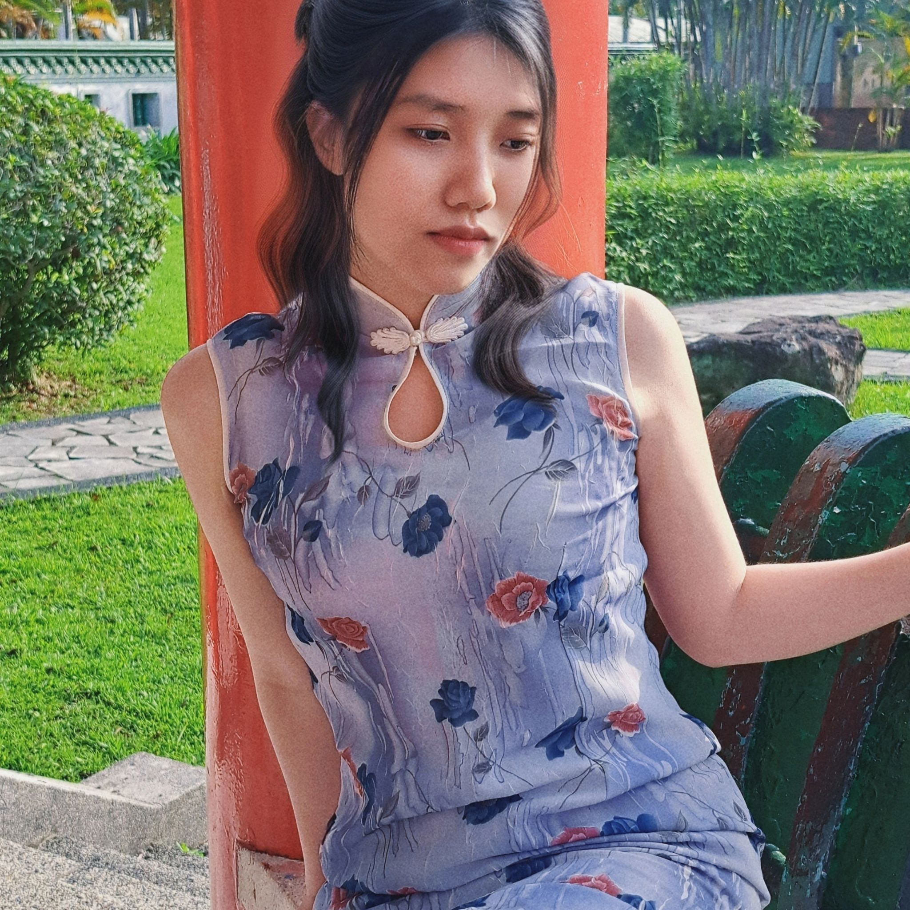

陳思妤
在最初得知期末專案是要做出一個電商網站，我光是想了一下其中所包含的各項功能就相當地擔心了，
不知道自己能否做得出來，而在要實際進行製作前，我們照著老師在期中專案所提醒過的一樣，
先規劃出網站架構，不得不說這步驟對於後續撰寫網頁真的很有幫助，
讓腦中的想法有個具體的樣子出來，接著進行分工，我所負責的是商品頁面，
版面雖然不複雜，但為了讓圖片、商品資訊、評論區三個區塊在視覺上是簡潔清楚地呈現，
所以花了些時間去調整區塊位置與大小，其中評論區我將組員的名字設為評論者的名稱，
在評價中也加了些趣味，比如說「怎麼這麼貴」、「長輩很喜歡」，組員看到後表示很好笑，
而頂部商品類別所使用的下拉式選項是我遇到的問題點，只要將滑鼠從導航欄往下滑，
下拉式選項就會立刻跟著消失，無法點選，重寫程式碼很多次還是沒有改善，
好險去和組員詢問研究後解決了。老實說，這個期末專案對於不擅長程式設計的我而言是很大的挑戰，
一些可能別人認為的簡單功能我都要花好幾個小時完成，在過程中感到壓力很大很崩潰，
不過幸好這是一個小組專案，雖然將網站拆分成三個部分去各自撰寫，
但我們都會互相提供建議、一同解決問題，透過彼此幫助，才有辦法在最後順利產出成果。

郭書安
在做這個期末專案時，我學到了很多關於用戶體驗設計和技術實現的珍貴經驗，
我覺得製作一個電商網站的核心目標是讓使用者可以輕鬆找到他們想要的商品並快速完成購買，
所以在設計時我們需要站在用戶的角度，確保頁面的結構簡潔直觀，例如在設計導航欄時，
我思考了很多設計方式，例如用一層層的分類讓用戶尋找需要的商品，但後來這個方式便被否決了，
因為分類清晰對於設計一個電商網站中非常重要，特別是對於商品種類多樣的網站，分類應該層次分明，
使用者的體驗才會好，後來在設計網站的配色時，我用了許多顏色，嘗試做出簡約優雅的感覺，
後來用了 colors 嘗試很多次才成功找到想要表達出來的感覺，我主要負責的部分是設計商品細節，
為了充實製作的電商網站，我們在這部分花了很多巧思，包括從取名到商品資訊及圖片的設計，
我想這能很好的確認我們的電商網站的視覺設計可以成功向顧客傳遞品牌的價值觀，但麻煩的是配色方案、
字體選擇以及圖片展示都需要與品牌形象保持一致。
這次製作電商網站的前端頁面對我這個 html 新手來說是一個充滿挑戰但也非常有成就感的過程，
以往身為使用者的我從未想到有一天我也會加入製作電商網站，它不僅考驗了我的技術和能力，
也讓我深刻理解到用戶需求的重要性，我希望未來能在更多的項目中運用這些經驗，
打造出更高效、更有吸引力的前端頁面。
陳嘉婕
這其實是我第一次接觸網頁設計，課程的一開始看到是滿滿的程式碼時覺得頭很痛，
因為我的程式設計不是很好，不過這門課只是先教我們怎麼做出整個網頁的排版，
老師也都很仔細的說明投影片中每個步驟並帶著我們實作，所以在這次期末專案的過程中，
我覺得進行的比想像中順利很多！我們的組員也花了很多心思在商品的內容和網頁的整個排版上，
雖然多媒體設計對我來說還不是到完全熟練的程度，
不過我也在每一堂課程和期中期末這兩次的專案中把學到的東西統整的更清楚了，
也了解到看似簡單的電商網站其實實際操作起來有非常多需要思考和注意的地方，
我覺得這次專案雖然難度沒有到非常高，但也是一個很好的經驗累積！